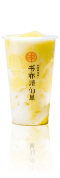
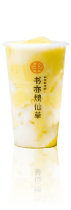

优质奶茶原料
大自然赋予的绿色、健康，手作现萃，精心调制，一杯奶茶在手，可与朋友作半日谈。原材料经过精心挑选，层层把关。将每一个不可能在源头得到解决，将每一个饮品在第一时间呈现给你。我们希望无论何时何地，都能让你喝到一样的书亦烧仙草奶茶，为你，我们用心。
Nature gives the green,hand-made eash,carefully modulated,
A cup of fairy grass to bring the grace and aftertaste,that is,an attitude of life,
But also a yearning for the fashion life,expected to taste good,
Your life needs more material.
产 品 展 示
书亦烧仙草始终坚持以“健康、新鲜、时尚”为经营理念，以“专业、专注、专心”的服务态度，为顾客呈现标准化，高品质的茶饮。
始终用心做好每一杯茶，料到好味道，只为让你更加直接体验到。
书亦美图
时尚个性 一眼锁定
书亦烧仙草奶茶的设计在形象上贯彻“立足时尚诠释经典”的理念。抛开浮夸的造型，给你一片舒适清净之地，不是大片留白的冰冷，没有大肆鲜红的灼人。原木纹理氤氲出自然纯净的气息，柔化了城市的冷硬，轻快又不失温度。整体呈现出简约时尚的个性。
设计师将这份简约的都市时尚之美，挥洒在书亦烧仙草奶茶加盟店的每一处设计上，将品牌设计连锁化，借时尚之美表达书亦经典
传统的设计理念与时尚流行美学的结合，不管是品牌诉求、价格定位还是设计风格，都是力求完美。给你最舒适的视觉享受。
六大优势，一站式帮扶
书亦烧仙草奶茶店始终坚持用心做好每一杯茶，料到好味道，只为让你更加直接体验到。
一、加盟利润保证：
原材料有仓库统一配送，大大降低了加盟商原材料成本。
二、奶茶服务优势：
从加盟到开店，全方位一站式服务体系，强大的品牌和公司支撑。
三、奶茶培训优势：
不仅培训饮品制作，更注重理论和后期加盟店管理的培训。
四、饮品口感优势：
所有原材料都是按照书亦配方找制定厂商定做，保证了口感的独特性。
五、店铺装修优势：
奶茶店铺风格趋近工业化，简约不简单，整体呈现不一样的空间感受，颠覆传统的人机工程设计。
六、开店经验优势：
活动策划、开业宣传、奶茶店铺运营等多方面拥有10年多的实战经验。强大的后期扶持团队，完整的后期扶持政策，免费广告设计、免费新品研发，一切为了加盟商。
奶茶加盟店资讯
书亦烧仙草加盟备受创业者欢迎的奶茶品牌
2018/10/11
【签约加盟店】热烈欢迎庆祝西昌郭女士加入书亦烧仙草奶茶店
2018/07/11
【签约加盟店】热烈庆祝托普余先生加入书亦烧仙草奶茶店
2018/07/11
门 店 分 布
四川书亦烧仙草餐饮管理有限公司
成都总部联系电话：400-085-7085 地址：四川省成都市武侯区长华路19号万科汇智中心6楼
长沙分公司地址：湖南省长沙市长沙县科技新城B28-2栋
武汉分公司地址：武汉市硚口区越秀财富中心7楼713
广东分公司地址：广东省佛山市南海区友邦金融中心二座3楼
河南分公司地址：郑州市管城区东风南路商鼎路升龙广场A座35楼
©四川书亦烧仙草餐饮管理有限公司 蜀ICP备12014704号
友情链接： 餐饮加盟 迷你仓 火锅底料批发 石家庄网站建设 西海商界 书亦烧仙草加盟 抖音认证 螺杆泵 珍珠奶茶加盟 快马加盟网